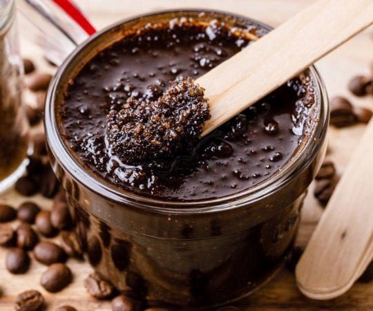
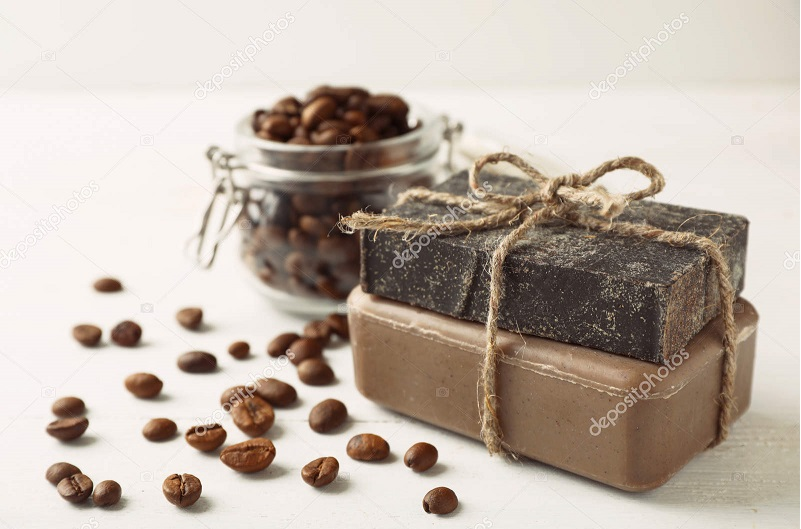

CupOfJoe

The aroma of coffee is the part of rhythm of the day, another anchor in routine that soothes and gives a normality and predictability
The aroma of coffee is the part of rhythm of the day, another anchor in routine that soothes and gives a normality and predictability


+91 912345678
DIY Using Coffee

Coffee Face scrub
Scrubbing the face with coffee grounds can help to clear away dead skin cells and unclog the pores. The
chlorogenic acids in coffee may also reduce inflammation and protect against some strains of bacteria.
Soothes Skin. Coffee scrubs combine ground coffee with salt, sugar and oils that leave your skin
nourished and moisturised other than just cleansing it off toxins.
Tightens Skin.
Anti-Ageing Properties,
Improves Circulation,
Repairs UV Damage.
Coffee Candle:- The smell of coffee and coffee scented products have been found to help perk you up as
well as helping regulate sleep and reducing stress.
With a coffee scented candle you can enjoy the same benefits of that rich and robust coffee scent without having to even make coffee.
 Coffee Bath Soap When added to a soap bar or a body scrub, finely ground coffee beans can rid the skin of dry, dead skin cells and restore it to a more radiant and smooth appearance. Coffee, by stimulating blood flow, improves circulation and consequently the appearance of the skin!